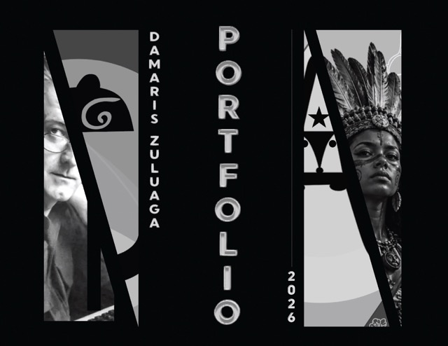
Portfolio
- Project:Typography Portfolio
- Timeline: April 22–June 29, 2026
- Tools: Adobe Illustrator, After Effects, Photoshop, InDesign
Description
In my personal brand, I interwove my initials, “DZ,” to create a sense of connection—each letter supporting the other as a symbol of collaboration, unity, and belonging. A soft yet confident color palette reinforces this idea, expressing authenticity, compassion, and optimism while signaling a forward-looking spirit. At the center of the emblem, subtle motifs inspired by Taíno symbolism add deeper meaning. These glyph-like forms, reminiscent of traditional petroglyphs, reflect themes of renewal, cosmic balance, and an enduring connection to the land. By incorporating these indigenous influences, the design honors ancestral heritage, grounds the brand in community, and embodies a sense of growth and transformation. Together, these elements communicate a message of inclusive strength—celebrating our origins, embracing shared identity, and looking toward a brighter, collective future.
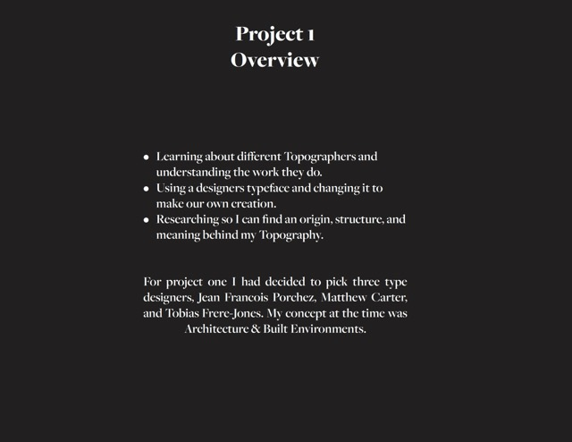
Logo Variations
Here is my personal logo shown in two variations—color and black and white—presented in different sizes to demonstrate its versatility and adaptability.
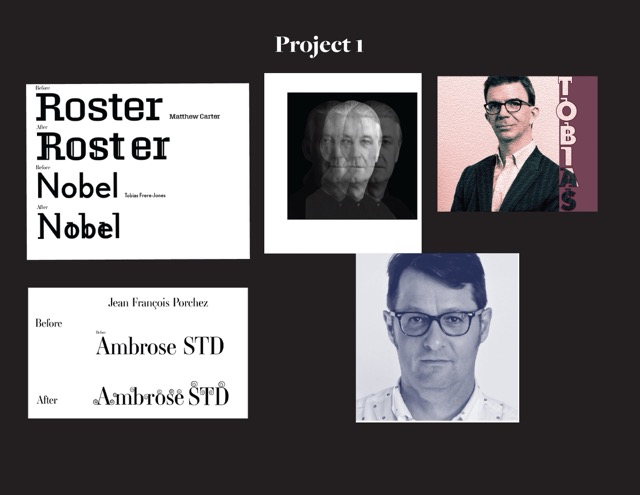
Typography & Construction
Using Bodoni 72 Bold, I combined the letters “D” and “Z.” This image demonstrates which parts of the original letterforms were incorporated into the final design.
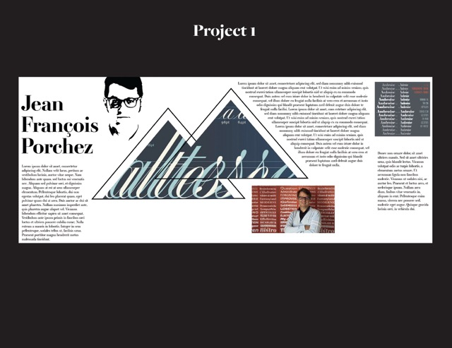
Logo Process
During this phase, it was difficult to decide which direction to take, from the construction of the letters to the color palette. Ultimately, I chose soft neutral colors for my personal logo.
Color Palette
This palette combines soft pink, slate, sage, taupe, and light neutral tones to create a balanced and sophisticated look. The colors reflect warmth, creativity, and cultural inspiration while maintaining a modern and professional feel that supports my personal brand.
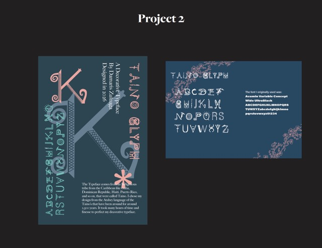
Logo Process
During this phase, it was difficult to decide which direction to take, from the construction of the letters to the color palette. Ultimately, I chose soft neutral colors for my personal logo.
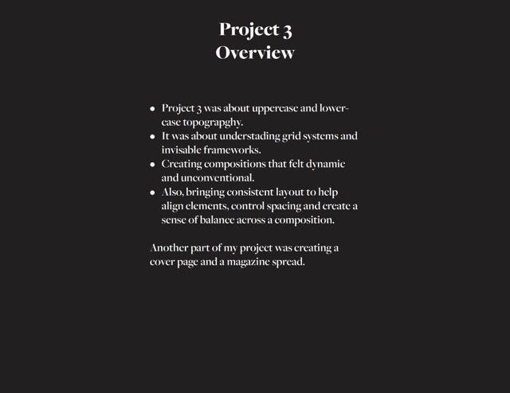
Color Palette
This palette combines soft pink, slate, sage, taupe, and light neutral tones to create a balanced and sophisticated look. The colors reflect warmth, creativity, and cultural inspiration while maintaining a modern and professional feel that supports my personal brand.
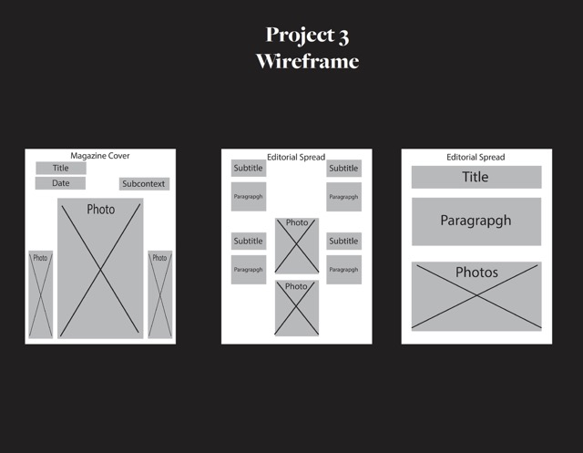
Logo Process
During this phase, it was difficult to decide which direction to take, from the construction of the letters to the color palette. Ultimately, I chose soft neutral colors for my personal logo.
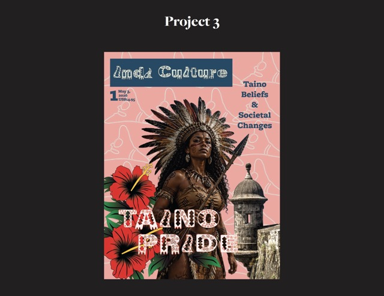
Color Palette
This palette combines soft pink, slate, sage, taupe, and light neutral tones to create a balanced and sophisticated look. The colors reflect warmth, creativity, and cultural inspiration while maintaining a modern and professional feel that supports my personal brand.
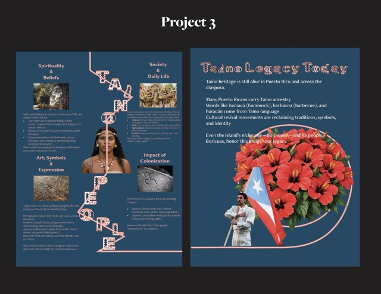
Logo Process
During this phase, it was difficult to decide which direction to take, from the construction of the letters to the color palette. Ultimately, I chose soft neutral colors for my personal logo.
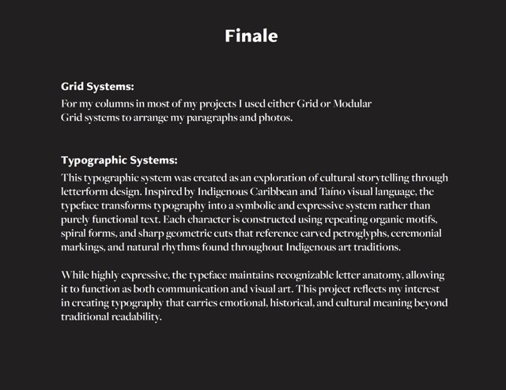
Color Palette
This palette combines soft pink, slate, sage, taupe, and light neutral tones to create a balanced and sophisticated look. The colors reflect warmth, creativity, and cultural inspiration while maintaining a modern and professional feel that supports my personal brand.
Specimen Posters
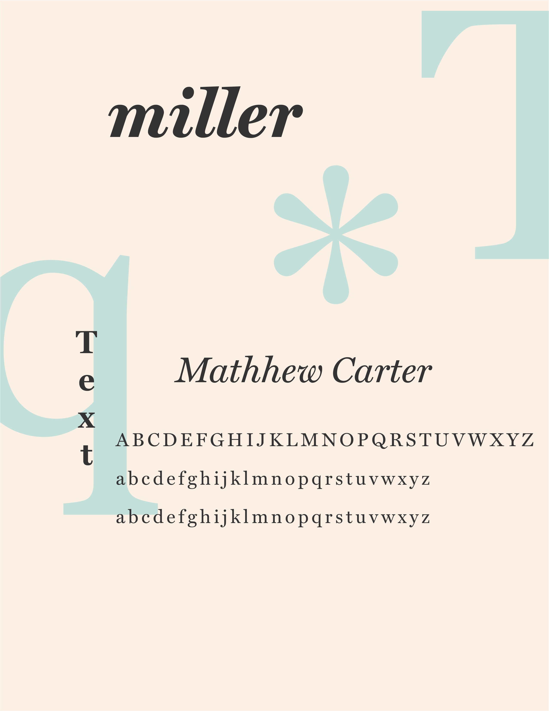
Bag Mockup
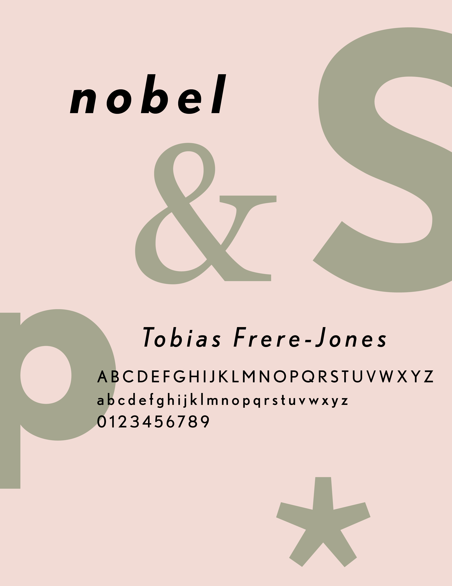
Hat Mockup